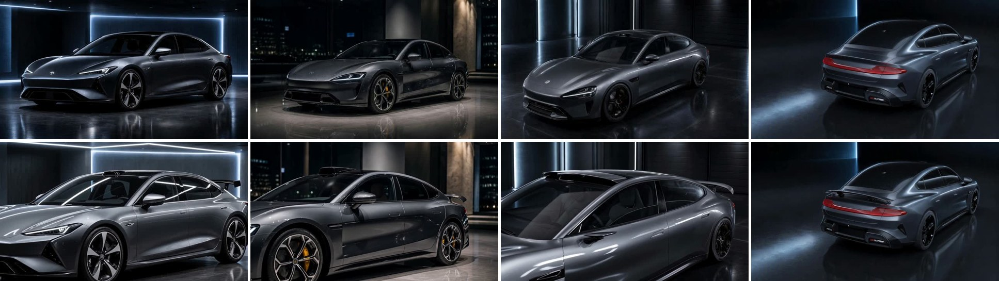
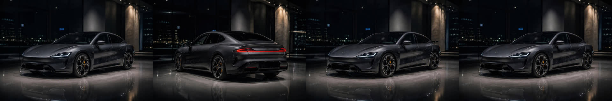
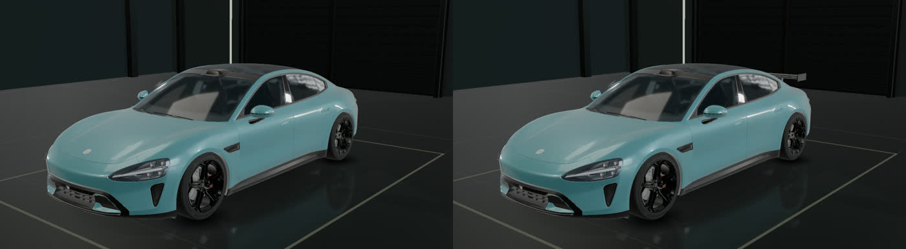
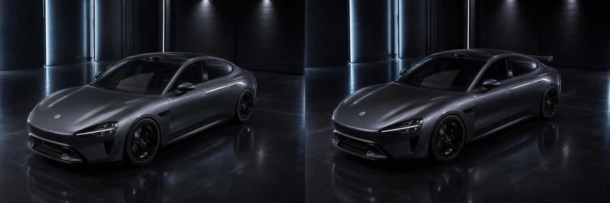

四种路线出片对比 · SU7 夜间展厅 · 同机位装运动尾翼前后
2026-09-30 · 同一条需求、同一网关（dreamina-seedance-2-0，8 秒，16:9）、只换「首尾关键帧从哪来」。①②③ 共用同一段运动提示；④ 是 2026-09-30 下午追加的，运动提示改为「locked-off static camera」措辞（见第 4 节第 3 条）。
0. 四路并排（左上 ① · 右上 ② · 左下 ③ · 右下 ④）

三路旧版并排：compare-3up.mp4
1. 四条路线各自怎么来的
① 自由生成 无锁定图
只给网关三段英文提示词（首帧 / 末帧 / 运动），GPT-image 自己画两张关键帧，再补间。没有任何参考图。
- 写首帧提示词「深空灰 SU7 展厅 无尾翼」
- 写末帧提示词「同一台车 同机位 装黑色尾翼」
- 网关 → GPT 出两帧 → Seedance 补间
耗时：提交 → 完成约 6 分钟。人工介入：0。
② 锚图本体 本方案 · 生产环境
POST /api/v1/ontology：LLM（claude-sonnet-5）把需求拆成 2 对象 / 1 链接 / 5 锚图 / 3 镜头；锚图以 SU7 身份图为参考逐张编辑；人在审核页选起止锚图后补间。

耗时：起草 ~10s，5 张锚图 ~4 分钟，视频 ~6 分钟。人工介入：审核一次（本次把 LLM 排的「车尾→装尾翼」换成「身份→装尾翼」，才是真同机位）。
③ 3D 白模重绘 blender-story 思路 · 渲染器换成车库
SU7 服务车库 V2.3（Three.js，真车 GLB）同机位截两帧：原车 / 勾选「运动尾翼」；GPT-image 参考重绘成深空灰夜间展厅（第二帧同时参考第一帧成品保持外观一致）；再补间。


耗时：截图 ~20s，两次重绘各 ~40s，视频 ~6 分钟。人工介入：0（脚本驱动车库）。
④ 本体 + Blender 层 新增 · 生产环境
POST /api/v1/ontology 加 render_backend=blender：LLM 除了对象 / 链接 / 锚图，还要产出一层 Blender 层——它本身就是本体的一部分，不含任何 SU7 特定代码：
- 场景预设：
showroom_dark（枚举 4 种）、地面是否反光 - 主体归一化：资产
su7.glb（worker 模型库里选）、文件 up/forward 轴、真实车长 4.97 m、转台角 - 状态 = 有界操作：
state-spoiler→add_part（尾翼盒 1.4×0.28×0.06 m，贴在rear-top，射线吸附到后备箱盖表面） - 机位语法：每张锚图只写 方位角 / 仰角 / 距离系数 / 焦距 / 看向哪（枚举）。身份图与链接图共用 az145 / el15 / ×1.1 / 35mm，所以两张灰模逐像素同机位
Windows worker 用 Blender 5.2 headless 出灰模，再以「灰模为第一参考、身份图为第二参考」GPT-image 重绘，然后进同一套审核页与补间。

耗时：起草 ~15s，3 张灰模 ~1 分钟，3 张重绘 ~2.5 分钟，视频 ~6 分钟。人工介入：审核一次（本次直接全通过，只改了运动提示）。
2. 成片
① 自由生成

② 锚图本体

③ 3D 白模重绘

④ 本体 + Blender 层

doubao-seedance-1-5-pro。
3. 逐项对比
| 维度 | ① 自由生成 | ② 锚图本体 | ③ 3D 白模重绘 | ④ 本体 + Blender 层 |
|---|---|---|---|---|
| 车是不是 SU7 | 不是——首帧是一台泛化深灰轿车，末帧又变成另一款前脸 | 是，前脸 / 轮毂 / 黄色卡钳全程一致 | 是，直接来自车库真车 GLB 的比例与轮位 | 是，GLB 真几何 + 身份图参考重绘 |
| 首尾两帧是同一台车 | 否，前脸、大灯、格栅都变了 | 是（末帧锚图以首帧为参考编辑） | 是（末帧重绘同时参考白模与首帧成品） | 是（两张灰模同机位同车，重绘时末帧以首帧成品为第二参考） |
| 尾翼"从无到有" | 有，但顺带换了车 | 有，只多了尾翼 | 有，位置与车库几何一致 | 有，尾翼位置由 add_part rear-top 射线吸附在后备箱盖上，几何真值 |
| 机位是否锁住 | 否，Seedance 大幅推近 | 否，同样大幅推近 | 否，同样大幅推近 | 是——四路里唯一锁住的；首尾帧灰模逐像素同机位 + 「locked-off static camera」措辞 |
| 展厅 / 光线一致 | 风格一致，布局变化 | 一致 | 一致 | 一致（同一 Blender 场景预设） |
| 人可干预的点 | 只能改提示词重跑全部 | 审核页逐张锚图通过 / 驳回 / 重生成、换镜头起止锚图 | 改车库配置重截，重绘不可控 | 审核页同 ②，另可改本体里的机位数值 / 状态操作后重出灰模 |
| 可回溯性 | 无 | 本体 JSON：对象 → 锚图 → 镜头 → job → 视频 | 车库配置 JSON + 两张图 | 本体 JSON 里多一层 Blender 层：预设 / 归一化 / 状态 ops / 每锚图机位 / worker job |
| 前置成本 | 0 | LLM 起草 + N 张锚图（本次 5 张） | 需要该车型的 3D 资产（SU7 有，M9 / ES8 没有） | 需要该主体的 3D 资产或只用 proxy 盒 / 圆柱；Blender worker 在 Windows ai 上已常驻 |
| 总耗时（到成片） | ~6 分钟 | ~11 分钟 + 一次人审 | ~8 分钟 | ~10 分钟 + 一次人审 |
4. 结论
- ① 不能用在任何需要"这台车"的场景：两帧各画各的，SU7 变成泛化轿车，中途还换了前脸。这就是「自由生成保不住对象同一性」的实证。
- ② 和 ③ 都保住了同一性，画质相当。差别在于：③ 的几何是真的（来自 GLB），② 的几何是 GPT-image 参考编辑"像"出来的；② 不需要 3D 资产、人可以在审核页逐张把关，③ 需要车库且重绘环节黑盒。对有 3D 资产的 SU7，③ 是 ② 的"锚图来源升级版"——两者可以合并：车库截图当锚图喂进本体，走同一套审核与出片。对没有 3D 资产的 M9 / ES8，只有 ②。
- ①②③ 共同的问题是机位没锁住：Seedance 把 "subtle push-in" 做成大幅推近。④ 复测已给出答案：运动提示改成 "Locked-off static camera, zero camera movement, no zoom, no pan"（并去掉 push-in 字眼）后，
dreamina-seedance-2-0真的把机位钉住了，四个采样帧几乎逐像素一致、只有尾翼长出来。所以推近是提示词问题，不是关键帧来源问题；本体层面已把这句写成「同机位对比」镜头的默认运动提示模板。 - ④ 相对 ③ 的增量不在画质，在"机位是数值"：③ 的机位靠人在车库里摆好再截图，换个主体（M9 / ES8 / 一瓶机油 / 一个人形 proxy）就得重摆；④ 的机位是本体里的 5 个有界数字（方位 / 仰角 / 距离系数 / 焦距 / 看向），状态是有界操作（显隐 / 加件 / 旋转 / 平移），场景是 4 个预设——"怎么把 Blender 建好"这件事本身被写进本体，LLM 只填枚举和比例，程序把它变成灰模。没有 GLB 也能用 proxy 盒子先把机位与状态定死。这就是「本体已建模，AI 只填数值」在 3D 侧的落地。
- 本体路线本次暴露的产品缺口：LLM 排的"同机位对比"镜头用了车尾锚图→前 3/4 锚图，审核人当时无法改起止锚图，只能绕过。已修：审核页镜头卡片加了起止锚图下拉框，PATCH 接受
start_anchor / end_anchor（待部署）。
5. 产物与链接
| 路线 | 网关 job | Drive | 本体 / 输入 |
|---|---|---|---|
| ① | b9f033c0-bbb2-4f8c-b489-d975badff1ab | video | 首帧 / 末帧 / 运动三段提示词（见页尾） |
| ② | e71930c9-3b5e-4465-ab8c-ed995507da73 | video | 审核页 · JSON |
| ④ | shot-01 dfd26504-d54e-4006-899e-cfd64c315bcbshot-02 7e6fdda8-11f0-4920-9671-13ee1e7da926 | video（shot-01） | 审核页 · JSON（含 Blender 层） · worker job onto-9803ca09 |
| ③ | ca5bf25d-06c5-4999-bcab-83d7f89fa968 | video | 车库 V2.3 默认机位 · 外观套件→运动尾翼 · 重绘 前 / 后 |
注：① 第一次提交的 job（892d63cb）因网关容器在中途被重建（任务在内存）而丢失，本页是重提后的结果；这也说明网关任务需要落盘。
① 使用的提示词
first_frame_prompt: A dark space-gray Xiaomi SU7 sedan parked in a premium night showroom, glossy reflective floor, cool blue-gray rim lighting, three-quarter front view from a fixed camera, stock car without rear spoiler, realistic automotive advertising photography, 35mm lens, no text, no watermark, no UI last_frame_prompt: The same dark space-gray Xiaomi SU7 in the same night showroom from the exact same fixed camera position and framing, now fitted with a black sport rear spoiler on the trunk lid, everything else identical: lighting, reflections, wheels, background, no text, no watermark, no UI video_prompt (三路共用): Fixed camera, same framing. Transition from the stock SU7 to the SU7 with a black sport rear spoiler installed, premium showroom reveal with a subtle slow push-in, keep car body, wheels, floor reflections and lighting consistent. No text overlays, subtitles, UI, logos or watermarks.
④ 运动提示（锁机位版，已验证有效）
Locked-off static camera, zero camera movement, no zoom, no pan. The stock SU7 becomes the SU7 with a black sport rear spoiler installed on the trunk lid: the spoiler materialises smoothly in place. Car body, wheels, showroom floor reflections and lighting stay identical. No text overlays, subtitles, UI, logos or watermarks.
④ 本体里的 Blender 层（LLM 产出、服务端夹紧后的原样）
"blender": {"enabled": true, "scene": {"preset": "showroom_dark", "floor_reflective": true},
"subject": {"object_id": "obj-su7", "asset": {"name": "su7.glb"}, "up_axis": "Y", "forward_axis": "Z", "length_m": 4.97, "rotation_deg": 0},
"states": [{"id": "state-spoiler", "label": "加装运动尾翼", "ops": [{"op": "add_part", "name": "sport-spoiler", "shape": "box", "dims_m": [1.4, 0.28, 0.06], "at": "rear-top", "color": [0.03, 0.03, 0.03], "tilt_deg": -8}]}]}
anchor.render: identity / link-wide 均为 {"azimuth_deg": 145, "elevation_deg": 15, "distance_factor": 1.1, "focal_mm": 35, "look_at": "rear"}；link-close 为 distance_factor 0.8 / focal 50。
③ 重绘提示词
Photoreal restyle of the reference 3D render. CRITICAL: keep the exact camera angle, framing, car position and size in frame, body proportions, wheel positions and every body panel from the reference; do not zoom, crop, move or re-centre the car. Change ONLY materials, lighting and environment: dark space-gray metallic paint, black wheels, premium night showroom with glossy dark reflective floor and cool blue-gray rim lighting, realistic automotive advertising photography, 35mm lens. no text, no watermark, no UI （末帧追加）The car now has a black sport rear spoiler on the trunk lid exactly as in the first reference image; the second reference image shows the finished paint, wheels and showroom look to match exactly.
方法文档：本体视频法 · 本页由对比脚本生成（④ 于 2026-09-30 下午追加），视频与图片均为真实生成产物，未经剪辑（并排视频仅缩放拼接）。